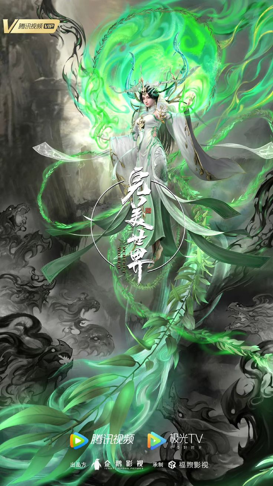

Thế giới hoàn mỹ
Tên khác:
Perfect World
Tác giả:
Thần Đông
Trạng thái:
Hoàn thành
Thể loại:
Tu tiên
Huyền huyễn
Đọc Truyện
Mô Tả Truyện
Thế Giới Hoàn Mỹ cải biên từ tiểu thuyết cùng tên. Hắn vì tu đạo mà sinh, vì ứng kiếp mà đến. Hắn hoá thân thành vô vàn mưa máu, vẩy rơi năm tháng vạn cổ, trải qua vô số tu luyện của thời không và thử thách của dòng chảy tháng năm. Hắn hoá thành vạn cổ, hoá thành tự tại. Xem nam chính Thạch Hạo làm thế nào đạt đến huy hoàng đỉnh cao một đời, tạo ra truyền thuyết vô tận. Main: Hoang Thiên Đế – Thạch Hạo Vợ: Hỏa Linh Nhi (chính thất), Vân Hi (mẹ của Tiểu Thạch Đầu), Thanh Y Cảnh giới: Phàm Nhân: 1. Bàn Huyết Cảnh 2. Động Thiên Cảnh: 1 Động Thiên – 10 Động Thiên (Cực Cảnh) 3. Hóa Linh Cảnh: Thân Thể Thành Linh – Trọng Tố Chân Ngã – Động Thiên Dưỡng Linh 4. Minh Văn Cảnh (Phong Hầu) 5. Liệt Trận Cảnh (Vương Giả) 6. Tôn Giả Cảnh Thần Đạo: 1. Thần Hỏa Cảnh (Ngụy Thần) 2. Chân Nhất Cảnh (Chân Thần) 3. Thánh Tế Cảnh (Thần Vương) 4. Thiên Thần Cảnh 5. Hư Đạo Cảnh 6. Trảm Ngã Cảnh 7. Độn Nhất Cảnh (Chí Tôn) 8. Chí Tôn Cảnh 9. Chí Tôn Cực Đạo (Nhân Đạo Đỉnh Phong) Tiên Đạo (Trường Sinh Lĩnh Vực): Chân Tiên → Tiên Vương → Chuẩn Tiên Đế → Tiên Đế Hệ Thống Tu Luyện do main tự sáng tạo: Luân Hải Bí Cảnh → Đạo Cung Bí Cảnh → Tứ Cực Bí Cảnh → Hóa Long Bí Cảnh → Tiên Đài Bí Cảnh (thế thứ 10 Độ Kiếp Thành Chân Tiên) → Tiên Vương → Chuẩn Tiên Đế → Tiên Đế
Các Chương
Chương 1: Đại hoang
Chương 2: Triều khí bừng bừng
Chương 3: Cốt văn